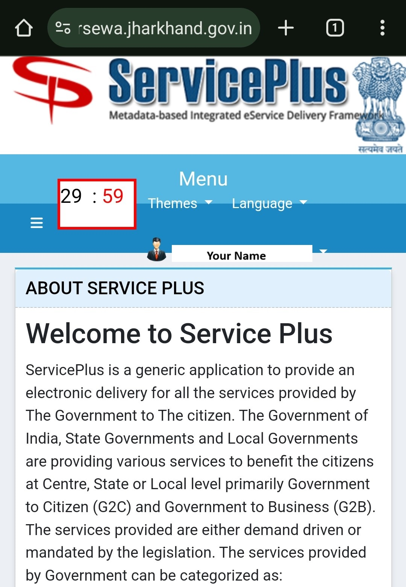
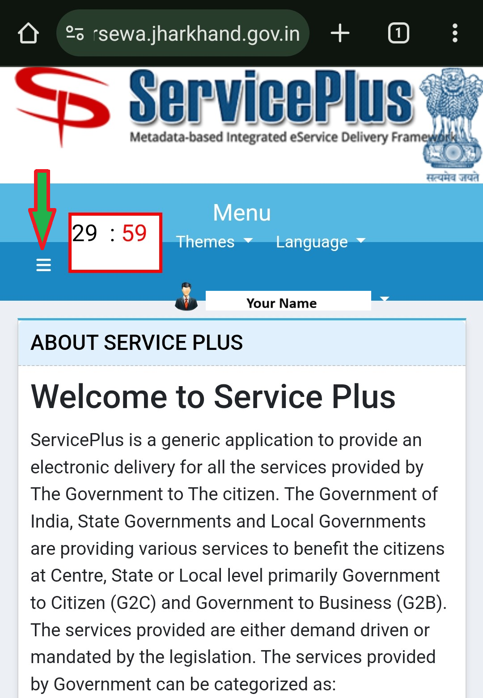

- JharSewa वेबसाइट पर जाएँ Click Here. और Login करें
यदि आपने JharSewa पर Register नहीं किया है तो
JharSewa पर Register कैसे करें यह जानने के लिए यहां क्लिक करें Click here
झारसेवा पर Login करने में सहायता के लिए यहां क्लिक करें Click here
- JharSewa में Login करने के बाद आप इसे अपनी स्क्रीन पर देखेंगे

- मुख्य मेनू का विस्तार करने के लिए यहां क्लिक करें
